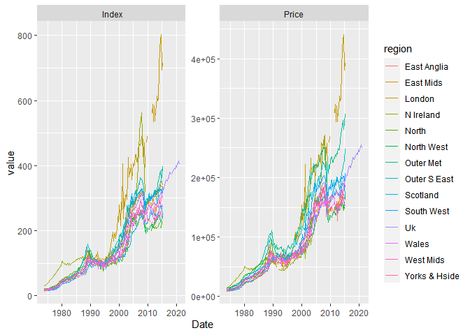

The goal of {nationwider} is to provide house price data from <nationwide.co.uk>. All datasets available have been curated using tidytools and returned in a convenient rectangular tidy format.
Installation
You can install the development version from GitHub with:
# install.packages("devtools")
devtools::install_github("kvasilopoulos/nationwider")Example
This is a basic example on how to download data with {nationwider}.
library(nationwider)
np <- nationwider::ntwd_get("new_prop")
np
#> # A tibble: 5,320 x 4
#> Date region type value
#> <date> <chr> <chr> <dbl>
#> 1 1973-10-01 North Price 13528.
#> 2 1974-01-01 North Price 13928.
#> 3 1974-04-01 North Price 14119.
#> 4 1974-07-01 North Price 13624.
#> 5 1974-10-01 North Price 14838.
#> 6 1975-01-01 North Price 14966.
#> 7 1975-04-01 North Price 15716.
#> 8 1975-07-01 North Price 16084.
#> 9 1975-10-01 North Price 17569.
#> 10 1976-01-01 North Price 18096.
#> # ... with 5,310 more rowsWe reshape our data from the initial form into a wider form.
library(dplyr)
#>
#> Attaching package: 'dplyr'
#> The following objects are masked from 'package:stats':
#>
#> filter, lag
#> The following objects are masked from 'package:base':
#>
#> intersect, setdiff, setequal, union
library(tidyr)
np %>%
dplyr::filter(type == "Price") %>%
spread(region,value)
#> # A tibble: 190 x 16
#> Date type `East Anglia` `East Mids` London `N Ireland` North `North West`
#> <date> <chr> <dbl> <dbl> <dbl> <dbl> <dbl> <dbl>
#> 1 1973-10-01 Price 9375. 8860. 11780. 13598. 13528. 10058.
#> 2 1974-01-01 Price 9275. 8879. 11827. 15334. 13928. 10438.
#> 3 1974-04-01 Price 9549. 8967. 12077. 15931. 14119. 10503.
#> 4 1974-07-01 Price 9494. 8850. 12390. 16889. 13624. 10514.
#> 5 1974-10-01 Price 9531. 8937. 12265. 17522. 14838. 10721.
#> 6 1975-01-01 Price 9779. 9054. 12234. 18209. 14966. 10797.
#> 7 1975-04-01 Price 9953. 9539. 12468. 19548. 15716. 11144.
#> 8 1975-07-01 Price 9907. 9617. 12843. 20578. 16084. 11394.
#> 9 1975-10-01 Price 10393. 9762. 13273. 22622. 17569. 11807.
#> 10 1976-01-01 Price 10438. 9985. 13187. 23761. 18096. 12220.
#> # ... with 180 more rows, and 8 more variables: Outer Met <dbl>, Outer S East <dbl>,
#> # Scotland <dbl>, South West <dbl>, Uk <dbl>, Wales <dbl>, West Mids <dbl>,
#> # Yorks & Hside <dbl>Here we are plotting all regions using type Index and Price as facets.
library(ggplot2)
np %>%
ggplot(aes(Date, value, col = region)) +
geom_line() +
facet_wrap(~ type, scales = "free")